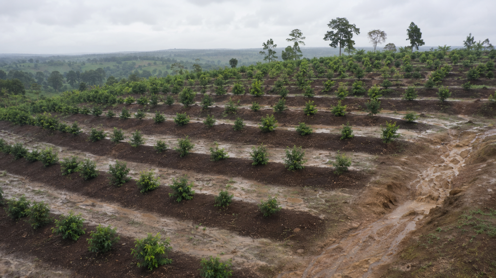

After every heavy rain, your best soil is the first thing to leave the farm. There is a fix that costs almost nothing and gets stronger every year instead of wearing down.

Bala farms a sloped plot in Plateau State. Every time the rain comes hard, he loses a layer of his best soil. He has watched the same gully grow wider for three years. He thought this was just what happens on a slope. It is not. It only happens when nothing stands in the way of the water.
Nigeria loses an estimated 3.5 billion tonnes of topsoil to erosion every year, and sloped land is where it happens fastest. The fix is not a wall or a trench. It is a line of trees planted across the slope. The trees break the water’s speed before it can carry the soil away.
Reality Check
A single row of strong trees planted across a slope can slow the water down a great deal, giving rain time to soak into the ground instead of rushing downhill with your soil attached to it. Once grown, this barrier never needs rebuilding, unlike a trench or wall that wears down over time.
Find the Level Line Before You Plant Anything
The barrier only works if it follows a true level line across the slope, not a line that goes up and down it. A level line is a path where the ground stays the same height the whole way along, even though the land around it rises or falls. This is hard to judge by eye, so a simple tool helps.
An A-frame level does the job. It is made from three wooden poles and a string with something heavy tied to the bottom. Use it to mark a level line every five to eight metres down the slope. Each line becomes a path the rainwater runs into, instead of running freely past it.
Choose Trees That Grow Roots Fast and Hold the Soil Firmly
Vetiver grass is often planted along the same line as the trees. Its roots grow into a thick mat within months, protecting the soil while the trees are still young. For the trees themselves, the Lead Tree (Leucaena) and Quickstick (Gliricidia) grow roots quickly and hold the slope firmly, and their leaves can be cut and fed to animals in dry season. If you also want timber to sell later, White Teak (Gmelina) gives you both the protection and a future income.
Plant Close Together, Then Let the Trees Do the Rest
Plant the trees about one to two metres apart along each level line so they form one solid barrier rather than single trees water can flow around. Within two to three seasons, the roots grow into each other underground and the fallen leaves build up the soil. The barrier begins to look after itself. Each line catches soil moving down from the line above it, building up behind each row like small steps holding the land in place.
Reality Check
A tree barrier does not need yearly repair the way a drainage trench does. The roots grow stronger every season instead of wearing down.
Bala’s gully did not appear in one season, and it will not close in one either. But the first level line he plants this year is the first season his soil stops leaving and starts staying.
The slope was never the real problem. What was missing from it was.